System Settings
The System Settings flyout is used to manage settings for the solution.
- Log Diagnostics Information
- Version
- Advanced Alerting
- Firmware JSON Template
- Simulation Data
- Theme
- Name and Logo
Steps to access System Settings:
- Login to the application
- Click on the setting icon(System Settings) on the right
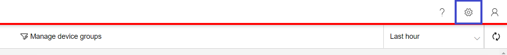 - System Settings flyout opens 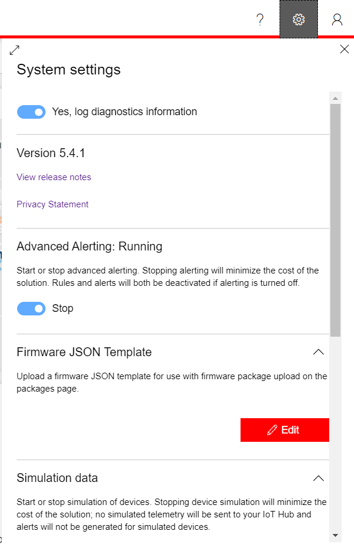
Log Diagnostics Information
This is a toggle which is used to enable/disable logging of diagnostics information
Version
This section displays the deployed version number of current environement 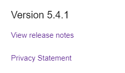
Advanced Alerting
This section is used to Start/Stop alerting. Rules and Alerts will be deactivated if alerting is turned off. 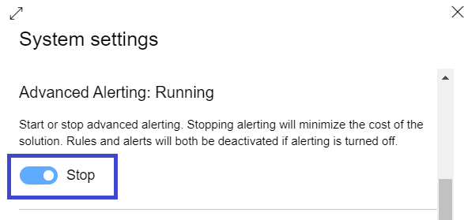
Note: ❌: Avoid turning on the alerts in order to minimize the cost of the solution
Firmware JSON Template
This section consists of a Firmware JSON template that can be used as a reference while uploading firmware package in Packages page. 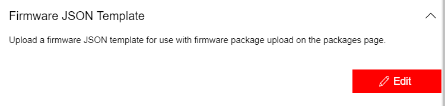
- Click on Edit button. A list of template variables that can be used in the template is displayed, along with the JSON editor for editing the template
 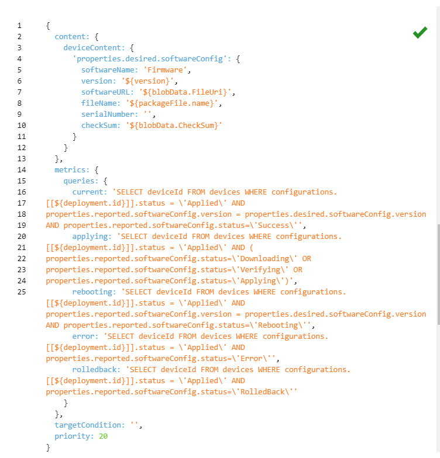
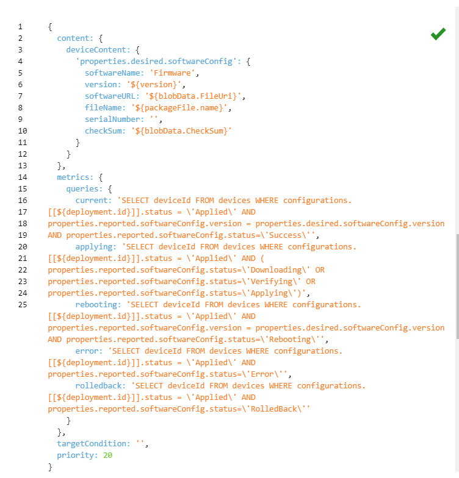 - Edit the Firmware JSON template in the JSON editor and make sure that the JSON entered is Valid. Click on Save
Simulation Data
This is a toggle which is used to start/stop simulation of devices. If disabled/stopped, no simulated telemetry will be sent to your IoT Hub and alerts will not be generated for simulated devices.
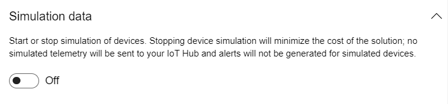
Note: ❌: Avoid turning on the simulation of device data in order to minimize the cost of the solution
Theme
A user can change the application color from here by switching from the themes available.
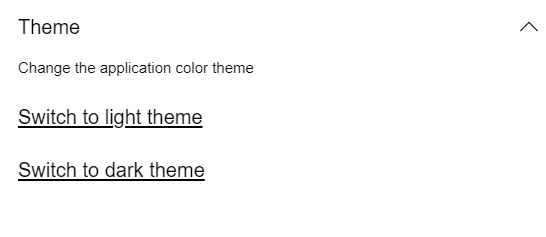
Below is the list of themes available:
- Light theme 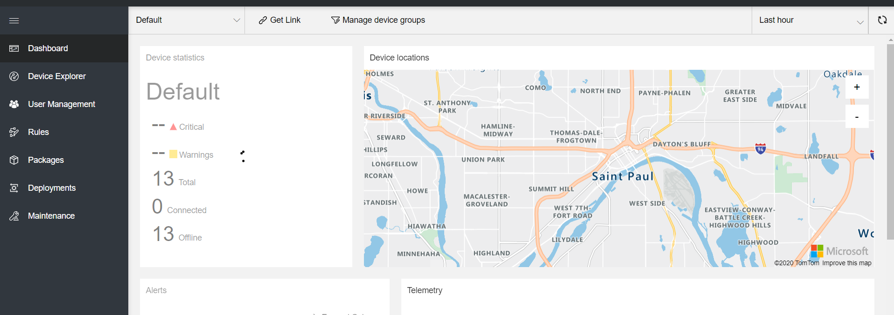
- Dark theme 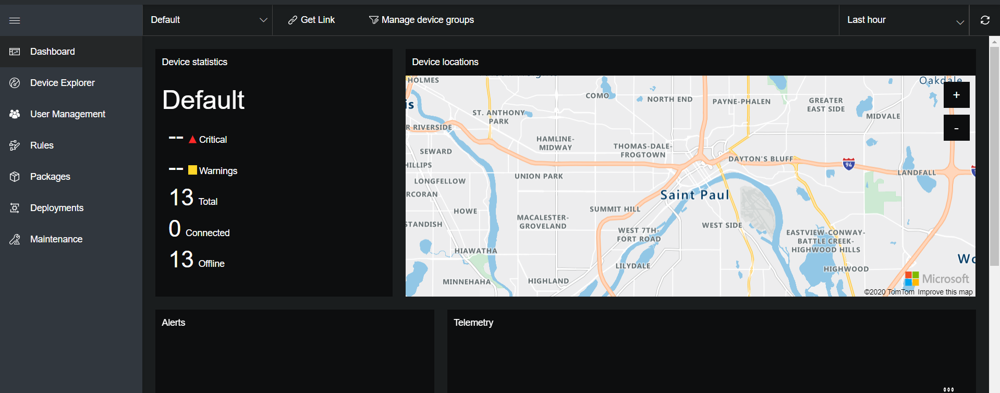
- MMM theme 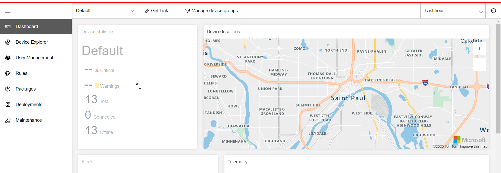
Name and Logo
The Name and Logo section lets a user to edit the name of the solution and logo(specific to each tenant). The Name and Logo are displayed in the header section of the application on the top.
Ex:
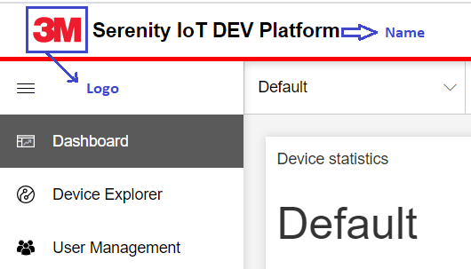
To edit Name and Logo
- Open System Settings flyout
- Scroll to Name and Logo section
- Click Edit button 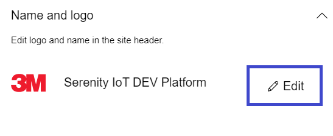
- Upload new Logo or Update Application Name or both
- Click Apply button to save changes 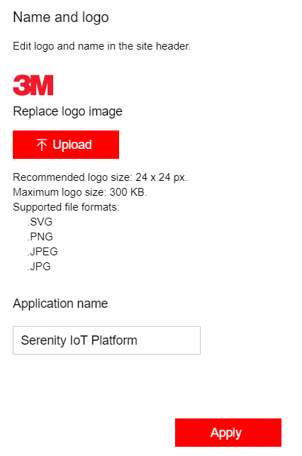
- The application refreshes with updated Name and Logo